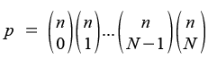
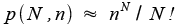
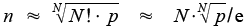

Poznámky a postřehy
Poznámky a postřehy
Zde najdete divokou směsici nápadů a myšlenek, od všednich přes
technické po ryze filozofické, od vážných po naprosté bludy.
Vše bez záruky.
Most used passwords
Most used passwords from igigi's web.
Comparison of SSD vs. HDD disks – JBoss AS compilation
A simple test performed on SSD disk Corsair X32.
Co je špatně v Českých Budějovicích?
Nemůžu si pomoct, ale v Českých Budějovicích mají radní opravdu zvláštní priority.
Nedávno rozhodli, že obyvatelé města ze všeho nejvíce potřebují splavnit úsek řeky Vltavy od centra města k Hluboké nad Vltavou. Nechali tedy za desítky miliónů vybagrovat bahno ze dna. Potom přišla povodeň, která vybagrované haldy opět spláchla do řeky.
A nyní, když se v rozpočtu nedostává peněz na „důležité“ věci jako je městská policie (o které se dozvíte na stránkách mestskapolicie.unas.cz), radní zruší všechny dva noční autobusy.
Opravdu geniální!
Ještě štěstí, že už v tom kocourkově nežiju.
Náckové nejsou pravičáci, ale levičáci!
Prosím všechny novináře, zejména ty, kteří píšou úvodní hlášky ke zprávám, aby se vzdělali v pojmech levice a pravice.
Pravice, to jsou lidé, kteří požadují menší zásahy státu a větší svobodu jednotlivce. Krajní pravice jsou anarchisti.
Levice, to jsou lidé, kteří se o sebe nedokážou sami postarat, nezvládají samostatně myslet a hospodařit s vlastním majetkem, a potřebují nadiktovat, co je dobré a co špatné. Krajní levice jsou komunisté. Když se k tomu přidá krajní nacionalismus, jde o nacisty.
Zejména Česká televize soustavně uráží všechny svobodomyslné lidi, když ultralevičáky – tedy nacisty – řadí k jejich – zcela opačnému – názorovému proudu.
//2008–10:// Tak nám zvolili ČSSD
Nedá mi to nereagovat na výsledek krajských a senátních voleb. A vzhledem k tomu, že se jedná o osobní web, můžu si zde dovolit silná slova.
Každý, kdo volí ČSSD, je buď hodně hloupý a věří slibům této mafiánské strany, nebo je líný, nechce se mu pracovat a věří, že ČSSD zde zakonzervuje zbytky socialismu, nebo je součástí kolotoče a veze se v tom s nimi.
ČSSD je prostě strana, jejímž programem je zneužít ty méně inteligentní voliče jako výtah k penězům všech. Bohužel zde asi pláču na špatném hrobě, protože nepředpokládám, že kdokoliv dost inteligentní na to, aby používal internet a zajímalo ho programování, by volil ČSSD. Nicméně všechny voliče ČSSD varuji, že jestli zvolí ČSSD i do parlamentu, nastane další vlna odchodu inteligence národa do zahraničí, a pro dementy, kteří volí ČSSD, tu opět zbyde méně lidí, kteří na ně budou pracovat.
Po MSN se šíří phishing –
yoimgz.com
Uživatelům MSN protokolu dnes chodí URL na server yoimgz.com.
Na nic neklikejte, jedná se o phishing.
Phishing spreading over MSN IM network
Today, users of MSN communicator receive links to server
yoimgz.com. Don't click it and do not enter anything – it's a
phishing.
Návod na vázání uzlů u kravat
Kdo si má pořád pamatovat, jak se to šmodrchá? Já si pro jistotu dal návod na uvázání kravaty na web.
Dojmy z Ubuntu 8 – Hardy Heron
Své dojmy z přechodu na Linux v podobě Ubuntu 8 popisuji zde.
Jabber plugin for Miranda IM does not work under Windows XP 64-bit edition
Jabber plugin for Miranda seems not to work with 64-bit version of Windows
XP.
However, Jabber addon in the developement branch, Miranda 0.8, works fine.
The same for Linux x64 and Wine, which supports only 32-bit applications
(AFAIK). Download here: Miranda
IM developement version
ATI Debevec Demo Music – DebevecRNLLoop.wav
I'm looking for the music used in ATI demo application „Rendering With Natural Light (RNL)“ (a real-time implementation of Paul Debevec's 1998 Siggraph paper), available at http://ati.amd.com/…s/r9700.html.
Can anyone identify the tune?
Soudný den, sečtení činů a věčný život
Křesťané (a kdoví kdo ještě) mají jako součást svojí víry dogma, že nastane soudný den, při kterém přijedou čtyři jezdci apokalypsy, činy každého jednotlivce budou sečteny a ty hodné čeká věčný život.
Jako i ostatní věci velmi obrazně popsané v Bibli se i tato dá vysvětlit všelijak. Často se v historii potvrdilo, že mnoho „proroctví“ vzniklo buď špatným překladem, nebo pokřivením a antidatováním (ať už mylným či záměrným) popisu skutečných událostí.
Dovedu si docela dobře představit, význam soudného dne, sečtění činů a věčný život ve skutečnosti reprezentují osudný den, sečtení činů ve smyslu dosavadního vývoje lidstva a jeho aktuálního stavu, a věčný život je ve skutečnosti naděje na udržitelný rozvoj civilizace.
Mnoho textů v Bibli pochází od židovských i jiných filozofů, kteří se jistě zabývali i otázkou, v jakých kolejích se má lidstvo ubírat, aby nezahubilo samo sebe. A tak vznikla myšlenka, že může nastat situace kritická pro celé lidstvo, osudný den, kdy každý čin ve prospěch lidstva může mít vliv na další vývoj. A proto by každý měl konat s vědomím, že jen dobré činy umožní civilizaci v onen osudný den přežít, a tedy věčný život bude umožněn jen těm lidem (= takové společnosti), kteří budou jednat v její celkový prospěch.
Nejsem ani amatérský teolog, ani záhadolog, jen mi s blížícími se
státnicemi přišla na mysl apokalypsa :-)
Pokud vás toto téma zaujalo, dobrý článek, potažmo web najdete zde: http://www.myty.info/view.php?…
Nedokonalost indexu Google
Google umožňuje vyhledat frázi uzavřením do uvozovek. Fráze znamená, že se slova v dokumentu vyskytují ve stejném pořadí, jako v uvozovkách. Bohužel Google při tom ignoruje výskyt čehokoliv jiného, třeba interpunkčních znamének.
Chtěl jsem vyhledat Pavla Hejtmana, odborného asistenta
z Jihočeské Univerzity. Co čert nechtěl, hejtmanem Karlovarského kraje je
jakýsi Josef Pavel, a web je proto plný výskytů posloupností slov
typu „…řekl Josef Pavel, hejtman Karlovarského kraje.“ Když potom do
Google zadáte "Pavel Hejtman",
veškeré výsledky (kam až jsem vydržel proklikávat) odkazují právě na
takovéto texty, a Pavel Hejtman jako by neexistoval. Naštěstí Pavel Hejtman
je odborný
asistent s akademickým titulem, proto je možné jej vyhledat aspoň
pomocí Pavel
Hejtman PhDr.
Neil Armstrong na Měsíci vyvěsil Bílou vlajku proti radaru
Hnutí Nenásilí informovalo o podpoře amerického astronauta v boji proti radaru v Brdech. NASA údajně uskutečníla mimořádný neplánovaný let na Měsíc, aby zde Neil Armstrong s dvěma členy vesmírného výboru hnutí Nenásilí mohli vyvěsit Bílou vlajku, symbolizující odpor proti imperialismu a proti závodům ve zbrojení se strany států pod vedením pitomců a v budování obranných systémů na straně zemí řídících se zdravým rozumem.
Více informací najdete na adrese http://www.nenasili.cz/…-radaru.html.
SETI@home podruhé
Vždy po koupi nového počítače si říkám, že je škoda, aby taková mašina běžela jen tak. Pustím tedy SETI at home. Navíc mi to v zimě docela pěkně vytopí pokoj.
Po nějaké době mašina zastará a já si říkám, zda přínos projektu SETI ospravedlní energetickou (a tedy i ekologickou) zátěž. Jaký je vlastně přínos projektu SETI?
- Výzkum v oblasti distribuovaných výpočtů – proof of concept
- Sociální dopady – jakás takás hrdost na svou zemi / univerzitu / firmu / tým / whatever…
- Snad nějaký dopad na astronomii, nevím ale jaký.
Co se týká samotného primárního účelu SETI@home, tedy hledání mimozemské inteligence, zatím kde nic, tu nic. Zatím tedy nevíme nic – ani, zda mimozemská inteligence existuje, nebo zda neexistuje. V tomto směru tedy zatím výsledky žádné. (Je také otázka, co skutečně projekt zpracovává – podle konspirační teorie mého kamaráda luští odposlechy systému –ECHOLON– ECHELON.)
Ospravedlňují tedy dosavadní výsledky mojich cca 200 W? Osobně jsem v tomto hodnocení trochu náladový. Nedávno jsem od SETI@home přešel na prokejt Rosetta@home. Po pár měsících mi ale provozovatelé SETI@home poslali mail, že nedávno jsem z projektu odešel, ale teď na přijímači v Areceibo pořídili zcela nový dekodér či co, který je schopný nahrávat až ze sedmi lokací na obloze najednou, a proto potřebují každý TerraFLOP. No budiž, znělo to tak přesvědčivě a prosebně, že jsem se nechal „ukecat“ :-)
Takže momentálně mám SETI@home puštěné 24 hodin denně, snad to k něčemu bude. Projekt Rosetta mě moc nepřesvědčil; SETI sice nemá žádné výsledky, ale aspoň o tom pravidelně a na poměrně slušné úrovni informují. Rosetta nemá žádné výsledky, ale to jen usuzuji z toho, že na webu projektu nejsou informace o tom, zda něco objevili, či nikoliv. Proto je pro mě projekt SETI@home důvěryhodnější a „výpočtuhodnější“.
Proč nikdo nepoužívá prohlížeč Opera
Prvně, omlouvám se několika promile lidí, kteří operu používají, například Zdeněk Roule, Satan a jejich přizpůsobivé okolí (konečně jsem je oba dostal na internet :-) )
Nicméně, z perspektivy tohoto grafu Operu skutečně nikdo nepoužívá.
Velmi krátce jsem se zamyslel, proč jsem ji kdysi nezačal používat i já, ještě v době, kdy Mozilla suite nebyla tak dokonalá, a Opera již byla zadarmo.
- Kvůli bannerům. Být zadarmo je pěkná vlastnost, ale aby se mi několik hodin denně vypalovaly do sítnice barevné blikající věci, na to já nejsem. Pravda, byly různé cracky, ale kdo by se s tim mořil – zas tak špatná ta Mozilla Suite nebyla.
- Výchozí skin. Nemůžu si pomoci, výchozí skin Opery je hnusný (YMMV). Hnusně šedivý s hnusnými hnusně zelenými ovládacími prvky – zkrátka, nedá se na to koukat.
- Pluginy. Pro Mozillu, potažmo Firefox, vzniklo již po krátké době existence (rozuměj od doby, kdy jsem ji začal já používat, tedy snad někdy ve verzi 0.7.x) tolik moc skvělých rozšíření, že se takovému stavu nemůže titěrná komunita fanoušků Opery –nikdy– ++v dohledné době++ přiblížit. Pro webového vývojáře je tato stránka věci zásadní.
Takže, důvod 1) padl, důvod 2) se drží a možná padne, důvod 3) will probably prevail forever. Nicméně pokud má Opera aspoň nahradit MSIE (libovolnou existující verzi – všechny jsou špatné), potom jí držím palce. Snad se někdy dostane aspoň na rozlišovací úroveň onoho grafu :-)
//Update:// Neoblíbenost Opery je tématem na http://www.lupa.cz/…zase-na-nic/.
//Update:// Také tématem na http://pixy.cz/…ivate-operu/
a na http://www.misantrop.info/586891-pera.php.
SETI@home want's you back
Před časem jsem seznal, že projekt SETI@home již funguje dost dlouho na to, aby přinesl aspoň „nějaké“ výsledky. Zatím však kde nic, tu nic. Ačkoliv existenci ufonů připouští již i Vatikán, projekt SETI@home zatím církvi radost nedělá – žádní ufoni (přesto že Jiří Paroubek nabídl marťanům koaliční dohodu), žádná komunikace s blízkými hvězdami, ba ani prachsprosté podezřelé pípnutí nebylo identifikováno. Rozhodl jsem se tedy, že nebudu nadále plýtvat cca 120 W na bezvýsledné výpočty a projekt opustím.
Jenže, po pár měsících mi napsali opravdu dojemný dopis, no posuďte sami:
Dear Astar Seran:
We'd like to invite you to reconnect with SETI@home. Our records show that you've been with SETI@home since 09 February 2008, but it's been 104 days since you last returned a work unit. We want you back, and here's why:
These are exciting times for SETI@home. Last year we implemented a new SETI@home data recorder at the Arecibo radio telescope in Puerto Rico. This recorder is attached to a state-of-the-art multibeam receiver, so we can now measure signals from 7 positions on the sky at once, with greater sensitivity to weak signals compared to the data from the flat feed antenna we've used since 1999. We've greatly increased the sensitivity of our data analysis, and the likelihood that we'll find the first signs of extraterrestrial life. We're also close to releasing a second application, Astropulse, which will look for extremely short pulses of astronomical (and possibly intelligent) origin.
With these new developments comes an increase in required computing power, for which we depend on people like you. We hope you will consider signing back on with SETI@home, and help in this wonderful scientific venture.
…
Jistě uznáte, že když nainstalovali tak skvělý přijímač, musím jim dát ještě šanci. Zvlášť jako osoba spjatá s masovým rozšířením SETI@home v ČR :-)
Kdo si vzpomene, kde byla tato ikonka vystavená a přilákala kolem 20 000 návštěvníků?
Výrazy, které na google nejsou
Je s podivem, že při vší té obsáhlosti webu, potažmo internetu, na Google stále nenajdete některé (zcela nezbytné) fráze.
Již se mi stalo několikrát, že jsem zadal frázi, u které jsem se bál spíše velkého počtu odkazů, ale rozhodně by mě nenapadlo, že se v indexu Google (který má nejobsáhlejší index ze všech vyhledávačů) vůbec nevyskytují.
Tak například:
Proč ředkvičky pálí?
Zajímalo mě, proč ředkvičky pálí. Jediný trochu relevantní odkaz vede na otázku diskutérky –
„Proč pálí ředkvičky jak sviňa? Já myslela, že to pálí proto, že jsou nerovnoměrně zalité. ale to já nemám. Nuže?“
Takže vím, že ředkvičky nepálí proto, že by Tigra neuměla zalévat zahradu.
Napadlo mě, že by to mohlo být omezeností českého internetu, kde najdete gigabajty diskuzí o tom, jestli je Paroubek blbec nebo velký blbec, ale o ředkvičky se nezajímá. Zkusil jsem tedy do Google zadat radish burns, radishes burn, why radishes burn. Bez výsledku.
Potom jsem si vzpomněl, že na otázky by se měl specializovat server Ask Jeeves. Zkusil jsem se ho tedy optat: Please, Why radishes burn? A ejhle, pod zadávacím polem mám nápovědu – mám se zeptat, Why Are Radishes Hot. Jenže na tento dotaz opět dostávám odkazy na stránky, které otázku stavějí takto:
Q. What causes my radishes to be „hot“?
A. The „hotness“ of radishes results from the length of time they have grown rather than from their size. The radishes either grew too slowly or are too old.
Nebo:
Q: What makes radishes hot? My radishes this year are almost too hot to eat.
A: Radishes get hot for a number of reasons. If they are too old they are hotter, and if they were grown under low fertility or if they got too dry, and their growth was not as fast as it should have been, then they turn hot.
Takže jsme zase tam, kde jsme byli. Já chci vědět, která látka v ředkvičkách pálí. Vite někdo, proč ředkvičky pálí?
Update: Tak výsledky vyhledávání se lehce změnily a do popředí se dostala odpověď Emeritního profesora Zahradnické fakulty Mendelovy zemědělské a lesnické univerzity Karla Kopce z Lidových novin:
Ředkvičky při krájení nebo rozkousání uvolňují látky, které jim dávají typickou vůni a chuť i větší či menší štiplavost (pálivost). Ředkvičky totiž obsahují glukozionoláty, z nichž se v porušených buňkách uvolňují aromaticky i chuťově výrazné složky – izothiokyanáty. Je jich řada a kromě chuťových vlastností mají také antimikrobiální účinky a výrazný vliv na lidské zdraví. Přispívají ke zlepšení imunity, omezují riziko některých chorob, podporují stravitelnost ostatních pokrmů. Právě proto se doporučuje zvýšit konzumaci ředkviček a ředkví až na jeden kg ročně.
Tak super, už to vím a universum se opět dostává blíže k rovnováze.
Jaká je výhřevnost vosku?
Další věcí, která mě zajímala, je výhřevnost vosku. V domě nám už netopí, okna profukují, a tak se stane, že mám na pokoji 17 stupňů i při neustále puštěném počítači. Kamarád mi poradil, že když nechá na pokoji hořet čajovou svíčku, tak během zhruba čtyř hodin, po které svíčka vydrží, vzroste teplota v pokoji tak, že musí větrat. Jenže jeho pokoj má 16 m2. Já jsem zapálil pole 6×6 čajových svíček, ale teplota vzrostla jen o půl stupně za hodinu. Proto jsem si chtěl ověřit, jak by se měla teplota vyvíjet teoreticky. Bohužel, výhřevnost vosku jsem na internetu nenašel. Stačila by mi jen orientační… nevite? :-)
Vícerozměrné jazyky
V teorii formálních jazyků se vyskytuje pojem „Vícerozměrné jazyky“. Pokud si ale tento termín v češtině zadáte do Google, mlčí.
Je třeba zadat „multidimensional language“ a dozvídáme se, že vícerozměrný jazyk je takový, jehož výrazy jsou tvořeny ve více rozměrech. Nic víc jsem ale nenašel – google dává pořád dokola tuto stejnou slovníkovou definici. (Kandidát na pojem ve wikipedii, nechcete se toho někdo ujmout a vytvořit wiki článek?)
Moucha košovka
Až do zaindexování tohoto článku se na Google vyskytuje jediná stránka na tato dvě slova a žádné stránky pro celou frázi. Muška košovka je moucha octomilka (viz Octomilka na Wikipedii).
Trojité rovnítko, trojité rovná se
Další nenalezené vyhledávané fráze možná přibudou časem. Teď mě jen zajímá, kolik lidí na světě je kdy bude vyhledávat.
Analytik-programátor otročí za jídlo, šaty a vzduch
Nabídka pracovního místa
Ještěři z pekel hledají programátora na pozici analytik-programátor.
Hledáme: Nekreativního otrockého programátora, nejlépe s čipem v těle.
Nabízíme: Jídlo, šaty a vzduch.
Popis pozice:
Více informací na www.vesmirni-lide.cz.
Vazba diplomové práce v Českých Budějovicích
Opět se blíží doba, kdy si diplomanti musejí nechat svázat diplomovou práci. Chtěl bych tedy všechny studenty varovat:
Nedávejte si diplomku svázat k firmě ZDECO!
Nejsem sám, kdo měl s touto firmou, sídlíci Na Sadech, potíže. Vazbu jedné DP zkazili (nevložili zadání), druhou zase svázali tak, že papíry pár minut po převzetí vyjely z desek. Tím se pochopitelně papíry zmačkaly a diplomka zničila. Chtěl jsem tedy vrátit peníze a uhradit škodu. Byli proti, jediné jejich přípustné řešení bylo, že mi do stejných desek znovu secvaknou nové listy. Nefér firma, sdružení obrany spotřebitelů na ně.
Klíčová slova: svázání, vazba, diplomová práce, diplomka, České Budějovice, desky, Jihočeská univerzita, ZDECO, Na Sadech.
Vypouštění vnitřního draka
Zajímavé. Spammeři procházejí literárním vývojem.
Mnozí si pamatují, že na začátku spamu, kdy jsme ještě maily stíhali třídit ručně bez použití filtrů, chodily suché výzvy typu „Enlarge your penis“. To nemohlo zaujmout snad nikoho kromě debilů, na které ale asi kampaň mířila, takže vpořádku.
Později první nastala vlna obrany proti spamu, založená na primitivní metodě „předmět / odesilatel / zpráva obsahuje slovo …“ → letí do koše. Krásné, jednoduché, ale fungovalo nanejvýš pár měsíců.
Protože poté začali spameři nahrazovat různé znaky kombinacemi jiných,
které je připomínají. Nejprve blízce
(„EnIarge your penis“), potom vzdáleně („Buy cheap
V|agra“). Potom se spameři rozdělili na dvě větve – ti
sofistikovanější, pro něž je spam výnosným obchodem, začali používat
pokrokové metody. Ti méně pokrokoví zůstali u staré metody, jen ji
dotahovali do krajností: Bai C|-|34-p Uu|aaaaagg RRRaaa!,
C|a L|S, kde ještě tušíte, že si máte nutně koupit levnou
ViiaaggRRuu nebo Cialis, ale když mi pak příjde výzva,
uh Buoy Cheap See - Alice, už je to skoro jazykový hlavolam.
Takový spam už přece není pro blbce :-)
Ovšem i na takové se později bayesovské filtry a antispam algoritmy naučily, a tak těm lepším spammerům opět nezbylo, než sáhnout k jinému kroku: Omezit kvantitu a zvýšit kvalitu.
A tak mi již denně nechodí dvacetkrát
Unrecognizable Rolex replica, ale mám ve schránce první
nesmělý náznak literárního útvaru:
Release your inner dragon with the help of bluepill!
Mmm… představil jsem si sám sebe jako mužskou verzi té žluté ninja-holky z Kill Billa, jak ve stylu Jamese Bonda zachráním nějakou šikmookou kočku a pak na ni vypustím svého „vnitřního draka“ :D Plný očekávání dalšího kvalitního obsahu jsem mail otevřel… ale zklamal mě. Nedočkal jsem se ničeho víc než
If you cannot act the way you want, take some blue-coloured pills!
Tak to je, pánové, trochu slabé. Až mi napíšete aspoň desetistránkovou motivační povídku, můžeme začít vyjednávat o nějaké té cheap částce – třeba dva centy za příběh. Do té doby vydělávejte nadále na blbcích, co koupí a sní „modré pilulky“ z pochybných zdrojů.
Tip na cestování hyperprostorem
Problémem mezihvězdného cestování je nutnost těleso urychlit na rychlost přijatelnou k dostatečně rychlému přesunu, a potom jej zase zabrzdit. Co kdybychom ovšem využili princip kolotoče?
Mohli bychom v jednom bodě (třeba i našeho prostoru) „upoutat“ „lano“, na konec lana připoutat těleso, které má cestovat, přemístit jej (stále v našem prostoru) na vzdálenost lana, a potom ho začít roztáčet. To by znamenalo udělit mu takovou energii směrem do jiného prostoru, která by stačila k jeho přemístění do výchozího bodu opisované „kružnice“. Po jeho opětovném objevení v našem prostoru ve výchozím místě bychom mu udělili další impulz, a takto jej postupně urychlovali.
Po dosažení určité rychlosti oběhu by už byl problém jenom
„nastoupit“ a „vystoupit“. Jsou dvě možnosti:
Jednak postavit obíhajícímu „dopravnímu prostředku“ náklad do cesty.
Vypadalo by to asi tak, jako kdyby bagr jel nadzvukovou rychlostí a někde
cestou nabral písek. To by jistě nákladu příliš neprospívalo.
Druhou možností je před nástupem náklad urychlit ve směru zbylého
rozměru na rychlost dopravního prostředku. Energetická náročnost by ale
byla asi stejná, jako na zrychlení a ubrždění nákladu při přímé cestě
naším prostorem. Je celá tato teorie tedy k něčemu?
„Dopravní prostředek“ by naším prostorem procházel jen velmi krátkou dobu. Problém urychlení nájkadu by tedy bylo vyvinout dostatek energie v krátkém čase. Co ale udělat další takové kolečko, tentokrát menší, a jen za účelem naložení nákladu? Jako oběžný bod by mohla sloužit nějaká těžká hvězda.
Celé to pochopitelně počítá s rozvinutým dalším rozměrem, nikoliv smrsknutým, jako teorie superstrun.
A teď hlavní otázky:
- Jak vytvořit lano? Gravitací?
- Proč to neudělat ve známých rozměrech?
- Má vůbec náš vesmír více jak tři rozměry?
Motiv zápisu tohoto s největší pravděpodobností blábolu hledejte v teorii myšlenkonů Terryho Prachetta :-)
Hledám řešení úlohy
Hledám řešení této otázky:
Máme N-rozměrný prostor. Kolik (N-1)-rozměrných prostorů rozdělí onen prostor na X N-rozměrných podprostorů?
Nevím, kde hledat odpověď. Víte (ji) někdo?
//Update:// Mám řešení. Dík patří Karlovi Kyrianovi za pomoc. Řešení jsem zpracoval ve svojí diplomce.
V jednorozměrném prostoru dělí každá nadrovina (bod) prostor přímky tak, že přibude další jeden podprostor. Ve dvourozměrném prostoru vzniká s každou přidanou přímkou vždy o jeden prostor více než s předchozí. Ve trojrozměrném prostoru potom vzniká s n-tou přidanou rovinou o tolik více podprostorů, kolik podprostorů vzniklo ve dvourozměrném prostoru při přidání n-té přímky. Obecně potom pro N-rozměrný prostor platí, že přidáním n-té nerovnoběžné nadroviny přibude tolik podprostorů, kolik celkem jich přibylo rozdělením N-1-rozměrného prostoru n nerovnoběžnými nadrovinami. Rekurentní výpočet by potom mohl vypadat takto:
Případně přímý výpočet vypadá takto: 
Potřebujeme ovšem znát opačný výpočet – známe dimenzionalitu prostoru, víme, kolik chceme výsledných podprostorů, a chceme vědět, kolik nadrovin jej takto rozdělí, resp. kolik máme použít neuronů na první vrstvě. Výpočtem se zde nebudeme podrobně zabývat, stačí nám jeho odhad. Výše uvedený výpočet se dá odhadnout jako 
Vyjádření n potom vypadá takto: 
kde (pro připomenutí) n je počet nadrovin, N je dimenzionalita prostoru, p je počet podprostorů a e je Eulerova konstanta.
Ve výpočtech zacházíme s dimenzionalitou prostoru. Ta je rovna počtu vstupů sítě.
ICQ Hoax / phishing
Chodí nový ICQ phishing: New ICQ phishing appeared:
Hello,Your NEW ICQ password is: A4T4jXMh
Remember – your ICQ password is case sensitive.
After you login to your ICQ number, you might want to consider changing your password to a more complex one.
Your new password must contain 6–8 characters. It should include English upper and lower case letters and numbers.
Try to select a random password that will be hard for others to guess. (Example: …)
Here's how you change your password: In ICQ 5: Click the Main Menu button > Preferences and Security → Password. In ICQ Pro versions 2000a through 2003b: Click the ICQ/Main button->Security & Privacy Permissions->Password. In ICQ 6: Click the Main menu button > select ‚Options‘ > under ‚Privacy & Security‘, select ‚Privacy‘ > click ‚Change my password‘.
Heslo si pochopitelně neměňte, buď je to kachna, nebo podvod. Of course, do not change the password – it's either a fraud or an hoax.